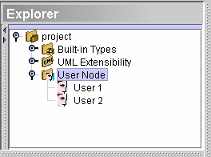

User
node

The user node refers to the list of user names. Since the user can be
defined as an owner, there can be only one user node
per project.
There are two different ways to add a user:
- Select User Node from the explorer window and
look for the Add tool
 in the edit
toolbar. Click it and click User underneath it.
in the edit
toolbar. Click it and click User underneath it.
- Right-click User Node and from the pop-up menu choose Add
> User.
